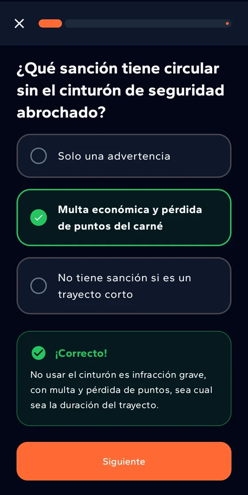

Tests de cada día
Responde, comprueba y entiende el porqué.
Responde preguntas del permiso B, comprueba la respuesta y lee por qué es esa. Avanzas por un camino de lecciones, sección a sección, empezando por El Conductor.
- Camino de lecciones
- Explicación en cada pregunta
- Ayudas: pista y 50/50